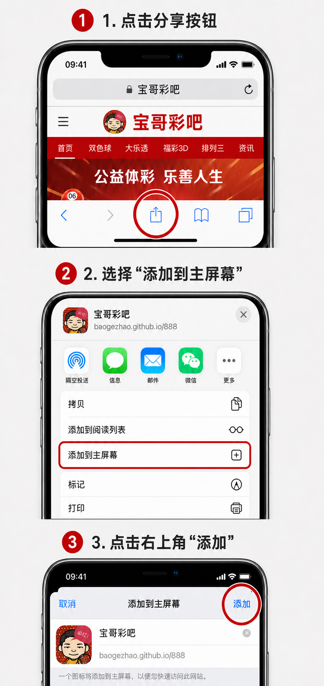
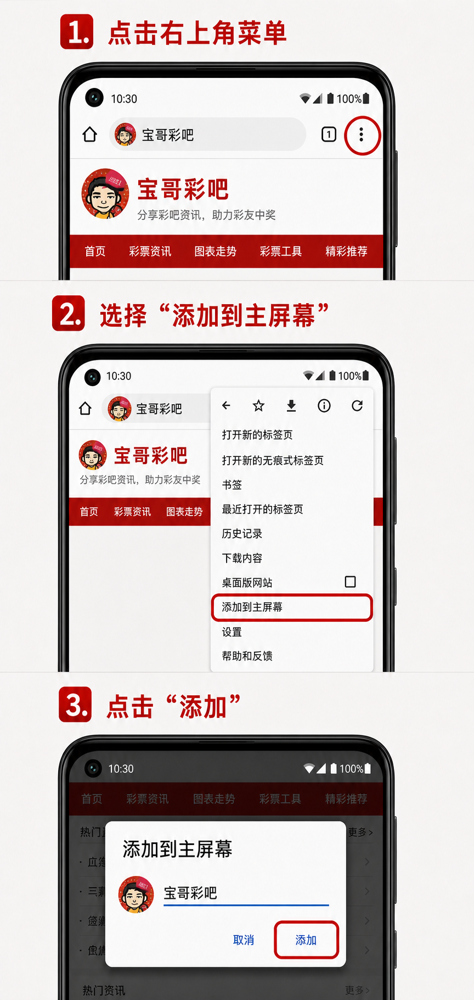

请注意：要选择的是“添加到主屏幕”，不需要选择“作为网络应用程序安装”。如果正在微信里打开，请先点右上角“…”并选择“在浏览器打开”。
苹果手机（Safari 浏览器）
- 使用 Safari 打开宝哥彩吧首页，点击底部的分享按钮。
- 向下找到并点击“添加到主屏幕”。
- 确认名称为“宝哥彩吧”，点击右上角“添加”。

不同 iOS 版本的按钮位置可能略有区别，但菜单名称都是“添加到主屏幕”。
安卓手机（浏览器）
- 打开宝哥彩吧首页，点击浏览器右上角的“⋮”菜单。
- 在菜单中选择“添加到主屏幕”。
- 确认名称为“宝哥彩吧”，点击“添加”。

华为、小米、OPPO、vivo 等浏览器的菜单位置可能稍有不同，请寻找“添加到主屏幕”或“添加至桌面”。